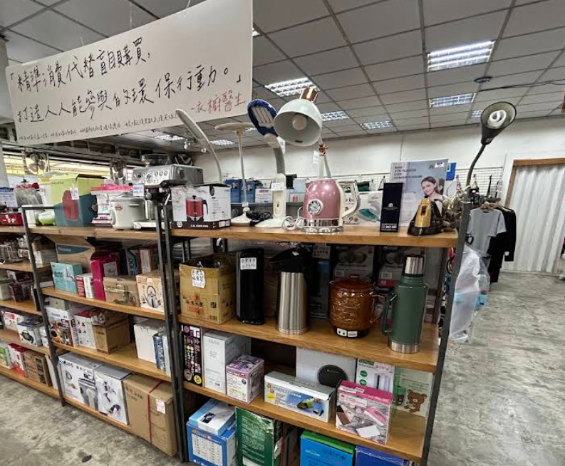
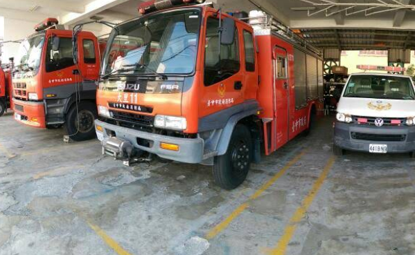

志工服務

我們到木匠之家參與一日志工活動，分配到的任務是協助發放宣傳傳單。透過這項工作， 我們向路過的民眾介紹他們正在進行的公益團購，希望能吸引更多人參與支持。雖然只是簡單的發傳單， 但能為公益盡一份心力，讓我們感到有意義，也更了解木匠之家所做的善事與努力。
中壢火車站探訪

這門課程以永續發展為主題，老師安排我們前往中壢火車站附近的東南亞街區進行實地探訪， 讓我們能親自觀察並感受與台灣本地文化不同的生活樣貌。在街區中，我看見了各式各樣來自東南亞的店家 、語言與特色裝飾，整個氛圍充滿異國風情，也讓我對多元文化有了更深的理解。
在走訪過程中，我還發現了一項特別的東南亞美食──月亮餅。它的外型看起來相當可愛，吃起來甜甜的，非常好吃。 透過這次課堂安排的實地探索活動，我不只接觸到新的文化，也更能體會多元社會中不同族群共存的價值與意義。這是一段非常有收穫的學習經驗。
打工

暑假時我參加了政府舉辦的暑期工讀計畫，被分派到消防局服務。原本以為能近距離看到消防隊員出勤救火的情景， 結果實際的工作內容主要是協助打掃環境與整理內部空間，偶爾才會幫忙處理一些簡單的文件。雖然有點單調， 與想像中刺激的消防工作差距很大，但在整理環境的過程中，我也看到了許多平常不會接觸到的消防器具與設備，對消防工作有了更深入的了解，覺得還算值得。
此外，消防隊員們都非常友善，不只耐心回答我對消防工作的好奇，有時還會請我吃點心，讓工讀的日子變得更溫暖。 整體來說，這次工讀雖然和原本期待不同，但仍帶給我不少新鮮的體驗與收穫。